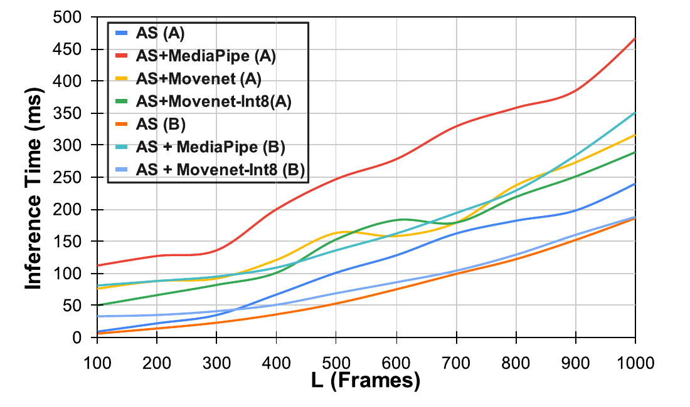
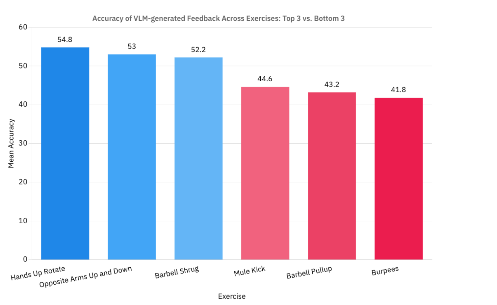

Successes, failures, and strength of evidence
What did the studies actually demonstrate?
The earlier pages compared methods. This page compares the strength and limits of the reported evidence. A success in one task should not be presented as success in every stage of coaching.
| Study | Demonstrated success | Failure, limitation, or missing evidence |
|---|---|---|
| FormCoach [1] | Highly actionable language in the reported benchmark. | Incorrect and hallucinated corrections; automated judge; no measured full-loop delay. |
| Real-Time Feedback and Benchmark Dataset for Isometric Pose Evaluation [2] | Angle features competitive with more complex models on several poses. | Small male-only cohort, unobstructed frontal setup, and no complete-loop timing. |
| Pose Trainer [3] | Explicit rules and DTW classification demonstrated on four exercises. | Tiny test sets and pose-noise sensitivity; no demonstrated mobile live loop. |
| AIFit [4] | Strong repetition segmentation and interpretable reference feedback, tested on held-out subjects. | Single instructor reference; feedback agreement uses its own ground-truth-3D coach. |
| SiTrEx [5] | Per-angle sequence comparison and measured phone processing time. | Lower F1 for held-out exercises; no explicit corrective instructions; folds not participant-separated. |
| Real-Time Posture Correction of Squat Exercise [6] | Temporal classifier outperforms tested alternatives on its squat data. | Stereo input; participant separation not established; regression accuracy terminology is ambiguous. |
Comparison 1: generalization
AIFit holds out people; SiTrEx holds out exercise types in one protocol. These answer different questions: can a system handle a new user, and can it handle a new movement? Pose Trainer's small tests and the squat study's stated train/validation split provide less convincing evidence of unseen-person performance. A high internal score should be qualified by what was actually held out. [4, §3] [5, §4.2] [3, Table 1] [6, evaluation]
Comparison 2: real-time claims
SiTrEx measures approximately 33–41 milliseconds for INT8 MoveNet plus its similarity model on a Snapdragon 695 phone with sequence lengths 100–300. That is stronger timing evidence than describing a prototype as real time. However, it excludes cloud coaching and the complete output loop. The squat study's 30 FPS is acquisition rate, which also does not establish correction delay. [5, Fig. 9] [6, methods]

Comparison 3: useful correction
FormCoach checks generated feedback against expert annotations using an automated judge. AIFit checks agreement against its own ground-truth-3D feedback. SiTrEx predicts per-angle similarity. These are useful technical evaluations, but none of these measures alone establishes that a user improves after following a cue. That remains an outcome question, rather than a demonstrated failure of every system. [1] [4] [5]

Slideshow: three comparison questions
Use the buttons to review the comparisons. Before reading each explanation, think about which evidence supports the conclusion.
1. Does a complex model always win?

No. The isometric study's simple angle features outperform the tested graph model on several poses, but lose on others. Its hold-based task helps explain why compact posture features can work. The conclusion is to test a baseline, rather than assume complexity is beneficial.